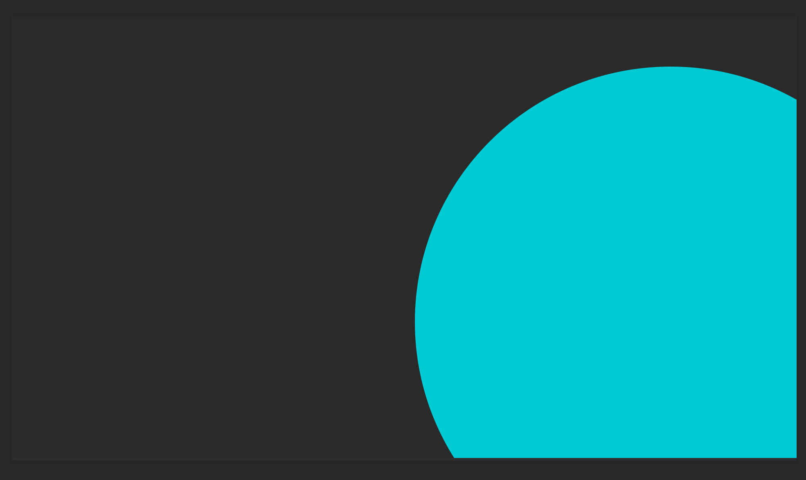
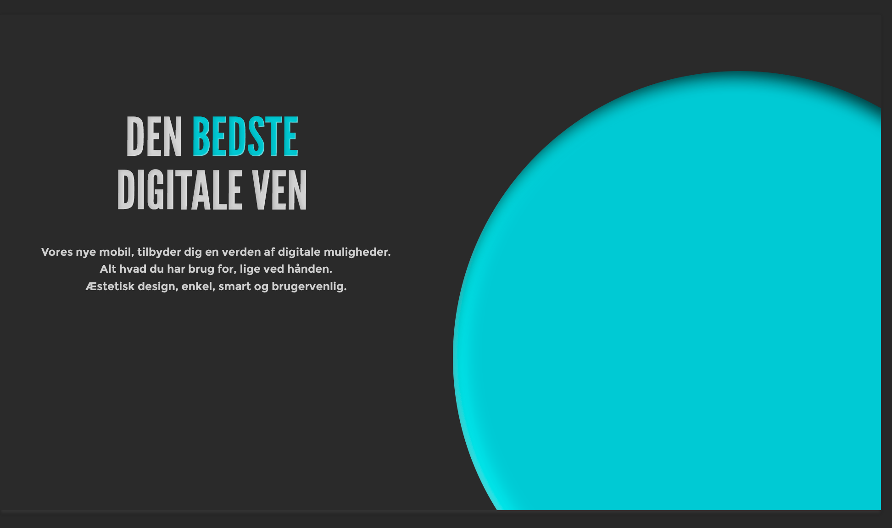
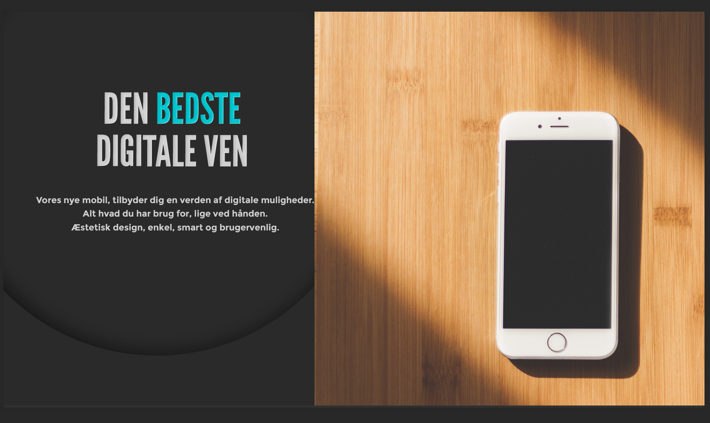
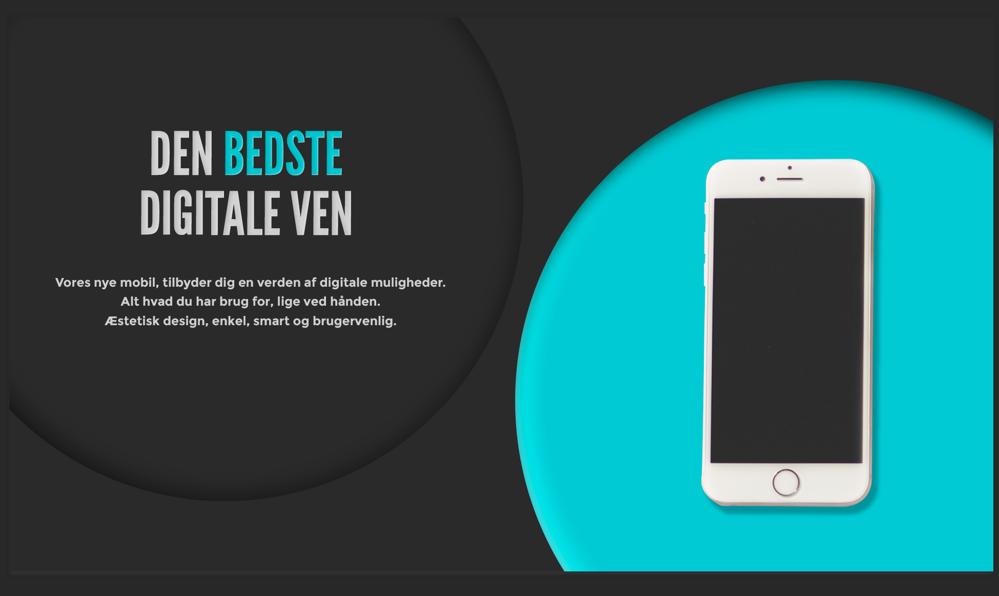
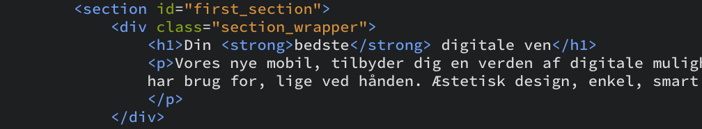
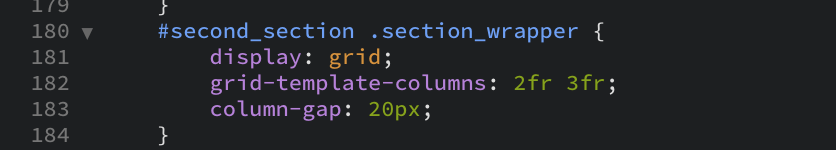
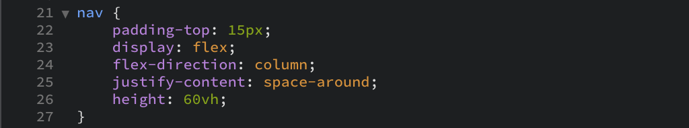
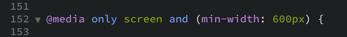

Grundlæggende
web
Beskrivelse
Grundlæggende web var et 4 ugers tema, hvor vi kom godt omkring stilarter, fonte, billederedigering, idéprocesser og kodning i HTML og CSS.
Vi blev opdelt i grupper som hver fik tildelt en stil at arbejde udfra. Derefter skulle vi enkeltvis sætte et website op, efter et wireframe, med et tema vi selv måtte vælge, her valgte jeg at arbejde med mobiler, da jeg syntes at elektronik passede godt til min stilart.
Design
Neumorphism
Jeg fik tildelt stilarten Neumorphism og har derfor skulle arbejde med den stil til mit website.
Neumorphism er en helt ny stil, som kendetegnes ved at være minimalistisk, organisk, dybde, skygger og med få farver. Den stammer fra Skeuomorphism blandet med flatdesign.
Moodboard
For at få inspiration har jeg søgt på nettet efter Neumorphism, og kreeret et moodboard udfra det.
Jeg har primært brugt inspiraton fra de skæve linjer, objekter der går ud over kant.
Styletile
Vi lærte omkring et styletile, hvor man beskriver sine valg for designet. Jeg har f.eks. valgt en sans-serif font, da det er det mest læsevenlige på skærm.
Favicon
Vi blev undervist i at udarbejde et favicon, jeg gik efter den organiske og minimalistiske stil fra neumorphism.
Her lærte vi også at et favicon er 12x12px, og derfor kan man få problemer, når det kommer ned i den størrelse, derfor udarbejdede vi en lille version, hvor vi farvede pixel for pixel.
Splash billede
Vi fik også til opgave at udarbejde et splashbillede i photoshop, til vores website.
Her valgte jeg at genbruge de valgte farver fra mit styletile, arbejde med former som jeg fik inspiration fra i mit moodboard, samt lave et kontrastrigt spil med fonte.
Arbejdsgang
1
2
3
4
Opbygning af site
HTML & CSS
I denne del af temaet lærte vi at arbejde med HTML og CSS i Brackets.
Vi lærte grund tag's og om id'er og classes.
HTML
Jeg satte siden op efter et layoutdiagram med en opbygning af header, sektioner og en footer. Sektionerne har hver en wrapper med grid.
CSS Grid
Derudover lærte vi f.eks. også at arbejde med flexbox, i en navigationsmenu.
CSS Flexbox
Responsivt design
For at få siden responsiv, lærte vi hvordan man bruger media queries i css. Denne opgave er lavet som mobile-first.
Dette eksempel betyder at alt kode som kun gælder en skærm på mindst 600px, skal tilføjes i denne media query.
